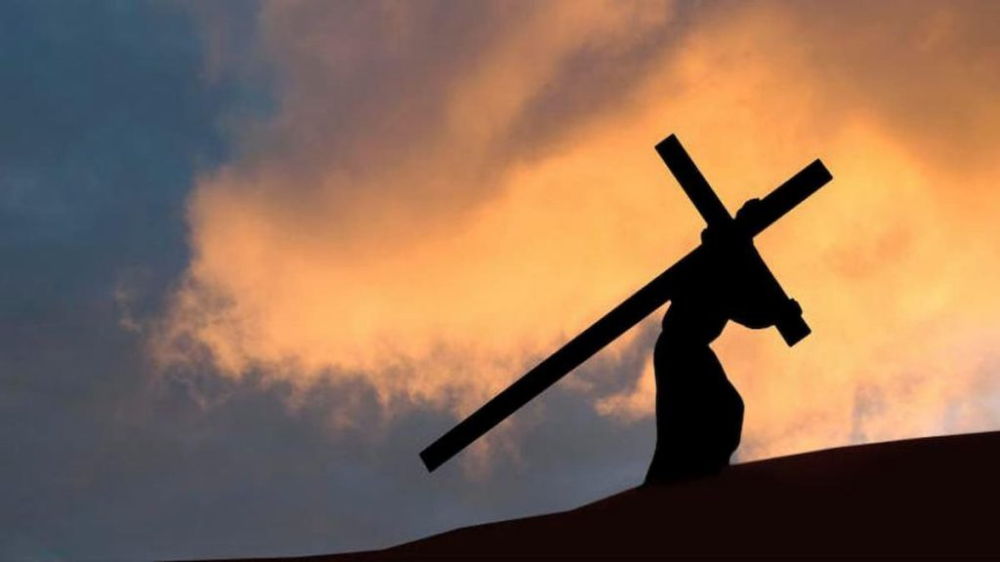

Historia De La Semana Santa

El significado de la Semana Santa gira en torno a la Pasión, Muerte y Resurrección de Jesucristo, tres eventos fundamentales de la fe cristiana. Durante estos días, los fieles recuerdan y reviven el sufrimiento de Jesús, su sacrificio en la cruz y su victoria sobre la muerte con su resurrección.
Origen De La Semana Santa

La celebración de la Semana Santa se da en fechas variables, entre el 22 de marzo y el 25 de abril, siempre antecedida por la cuaresma y enmarcada entre el Domingo de Ramos y el Domingo de Pascua o de Resurrección. Existe una razón histórica para ello. Las primeras normas para la celebración de la “Pascua Cristiana” se definieron en el Primer Concilio de Nicea en el año 325, para dar solución a la confusión al respecto (el computus paschalis) que oponía las visiones de la Iglesia de Roma y la Iglesia de Alejandría.
Así, se decidió que la Pascua cristiana se celebrara siempre un domingo, que no coincidiera con la judía, y que fuera una sola vez por año, dado que el año nuevo empezaba entonces en el equinoccio primaveral. Sin embargo, las discrepancias astronómicas continuaron entre las dos iglesias, que celebraban la Pascua con 4 días de diferencia.
Así, hizo falta una nueva reforma del calendario ritual, que fue propuesta por el monje bizantino Dionisio el Exiguo (c. 465-550) en el año 525. Fue él quien creó, además, la denominación de Anno Domini (“Año del Señor”) que permitió al calendario gregoriano sustituir al juliano. Una vez convencida Roma de las bondades del modo alejandrino de calcular la fecha de la Pascua, se estableció que:
- La Pascua ha de celebrarse siempre un domingo. Dicho domingo debe ser el siguiente a la primera luna llena de la primavera boreal, de modo tal que no coincida con la Pascua judía.
- La luna Pascual debe tener lugar en el equinoccio de primavera del hemisferio norte, o inmediatamente después. Dicho equinoccio debe ocurrir entre el 20 y 21 de marzo. De esta manera se llegó al cálculo actual de cuándo se celebra la Semana Santa.